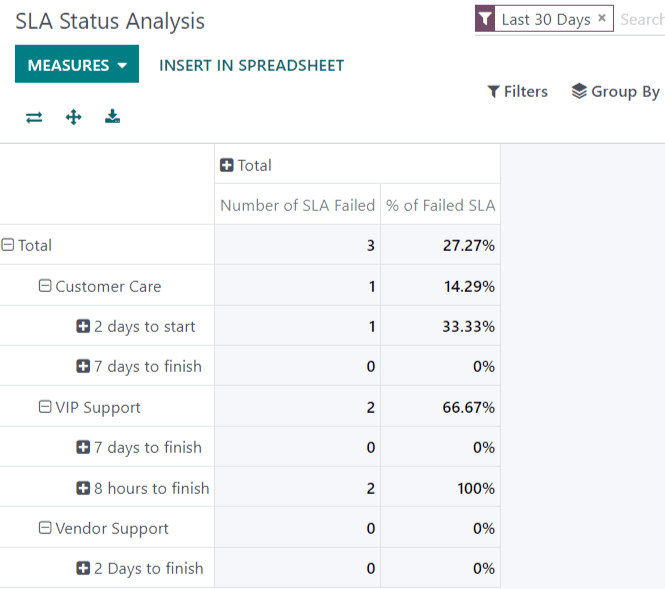

Informes¶
La aplicación Servicio de asistencia de Odoo incluye varios reportes que proporcionan la oportunidad de realizar un seguimiento de las tendencias de los tickets de soporte al cliente, identificar áreas de mejora, gestionar las cargas de trabajo de los empleados y confirmar cuando se cumplen las expectativas del cliente.
Reportes disponibles¶
A continuación se detallan los reportes disponibles en el Servicio de asistencia de Odoo. Para ver los distintos reportes, vaya a .
Analisis de tickets¶
El reporte de Análisis de tickets () proporciona una vista general de cada ticket de soporte al cliente en la base de datos. Esto incluye el número de tickets asignados entre equipos y usuarios individuales.
Este reporte es útil para identificar dónde invierten más tiempo los equipos y ayuda a determinar si hay una distribución desequilibrada de la carga de trabajo entre el personal de soporte. El reporte predeterminado cuenta el número de tickets por equipo y los agrupa por etapas.

Puede seleccionar medidas alternativas para consultar dónde utilizan más tiempo en diferentes puntos del flujo de trabajo. Para cambiar las medidas utilizadas del reporte presentado, o para agregar más, haga clic en el botón Medidas y seleccione una o más opciones del menú desplegable:
Horas promedio en responder: promedio de horas laborables entre un mensaje enviado por el cliente y la respuesta del equipo de soporte. No incluye los mensajes enviados cuando el ticket se encontraba en una etapa plegada
Horas abiertas: número de horas entre la fecha de creación del ticket y la fecha de cierre. Si no hay fecha de cierre en el ticket, se utiliza la fecha actual. Esta medida no es específica a las horas laborables.
Horas utilizadas: número de horas registradas en Hojas de horas de un ticket. Esta medida solo está disponible si las Hojas de horas están habilitadas en un equipo y el usuario actual tiene los permisos de acceso para verlas.
Horas para asignar: número de horas laborables entre la fecha de creación del ticket y cuando se asignó a un miembro del equipo.
Horas para cerrar: número de horas laborables entre la fecha de creación del ticket y la fecha de su cierre.
Horas para la primera respuesta: número de horas laborables entre la fecha de recepción del ticket y la fecha de envío del primer mensaje. No incluye el correo electrónico que se envía de forma automática cuando un ticket llega a una etapa.
Horas para la fecha límite de SLA: número de horas laborables para llegar a la última fecha límite de SLA en un ticket.
Valoración /5: número asignado a la valoración recibida de un cliente (Inconforme = 1, Bien o neutral = 3, Satisfecho = 5)
Número: número de tickets en total.
Nota
Las horas laborables se calculan según el calendario de trabajo predeterminado. Para ver o cambiar el calendario de trabajo, vaya a la aplicación y seleccione .
Análisis del estado de SLA¶
El reporte de Análisis del estado del SLA () registra la rapidez con la que se cumple un acuerdo de nivel de servicio (SLA), así como la tasa de éxito de cada política.
Este reporte se filtra de forma predeterminada para mostrar el número de acuerdos de nivel de servicio fallidos, así como la tasa de fallas en los últimos 30 días, agrupados por equipo.
Para cambiar las medidas utilizadas para el reporte presentado, o para agregar más, haga clic en el botón Medidas y seleccione una o más opciones del menú desplegable:
% de SLA fallidos: porcentaje de tickets que han fallado al menos un acuerdo de nivel de servicio.
% de SLA en progreso: porcentaje de tickets que aún tienen al menos un acuerdo de nivel de servicio en progreso y no han fallado ninguno.
% de SLA exitosos: porcentaje de tickets donde todos los acuerdos de nivel de servicio han sido exitosos.
Número de SLA fallidos: número de tickets que han fallado al menos un acuerdo de nivel de servicio.
Número de SLA exitosos: número de tickets donde todos los acuerdos de nivel de servicio han tenido éxito.
Número de SLA en progreso: número de tickets que aún tienen al menos un acuerdo de nivel de servicio en progreso y no han fallado ninguno.
Horas laborables para asignar: número de horas laborables entre la fecha de creación del ticket y cuando se asignó a un miembro del equipo.
Horas laborables para cerrar: número de horas laborables entre la fecha de creación del ticket y la fecha de su cierre.
Horas laborables para llegar al SLA: número de horas laborables entre la fecha de creación del ticket y la fecha en que se cumplió el acuerdo de nivel de servicio.
Número: número de tickets en total.
Example
Para ver el número de tickets que pudieron alcanzar los objetivos del SLA y hacer un seguimiento de la cantidad de tiempo que tomó lograrlos, haga clic en y .
Para ordenar estos resultados por los miembros del equipo asignados a los tickets, seleccione .
Ver también
Calificación de clientes¶
El reporte de Calificación de clientes () muestra un resumen de las calificaciones recibidas en los tickets de soporte individuales, así como cualquier comentario adicional enviado con la calificación.

Haga clic en una calificación individual para ver los detalles adicionales de la calificación que envió el cliente, incluye un enlace al ticket original.
Truco
En la página de detalles de la calificación, seleccione la opción Visible solo de forma interna para ocultar la calificación en el portal de clientes.
El reporte Calificación de clientes se muestra en la vista kanban de forma predeterminada, pero también se puede mostrar en la vista de gráfico, lista o tabla dinámica.
Ver también
Visualizar y filtrar opciones¶
En cualquier reporte de Odoo, las opciones de visualización y filtrado varían según los datos que se están analizando, midiendo y agrupando. A continuación encontrará más información sobre las vistas disponibles para los reportes del Servicio de asistencia.
Nota
Solo puede seleccionar una medida a la vez para los gráficos, pero las tablas dinámicas pueden incluir varias.
Vista de tabla dinámica¶
La vista de tabla dinámica presenta los datos de forma interactiva y los tres reportes de Servicio de asistencia están disponibles en ella.
Puede acceder a la vista de tabla dinámica en cualquier reporte, haga clic en el icono de tabla en la parte superior derecha de la pantalla.

Para agregar un grupo a una fila o columna a la vista de tabla dinámica, haga clic en el ➕ (signo más) junto a Total y luego seleccione uno de los grupos. Para eliminar uno, haga clic en ➖ (signo menos) y desmarque la opción apropiada.
Vista de gráfico¶
La vista de gráfico presenta datos en un gráfico de barras, líneas o circular.
Cambie a la vista de gráfico seleccionando el icono de gráfico de líneas en la parte superior derecha de la pantalla. Para cambiar entre los diferentes gráficos, seleccione el icono relacionado en la parte superior izquierda del gráfico mientras se encuentra en esta vista.

Truco
Tanto el gráfico de barras como el gráfico de líneas pueden utilizar la opción de vista apilada, esta presenta dos (o más) grupos de datos uno encima del otro, en lugar de uno junto al otro, facilitando así la comparación de datos.
Guardar y compartir una búsqueda de favoritos¶
La función de Favoritos en los reportes del Servicio de asistencia permite que los usuarios guarden sus filtros más utilizados sin tener que reconstruirlos cada vez que los necesitan.
Siga los pasos a continuación para crear y guardar nuevos Favoritos en un reporte:
Establezca los parámetros necesarios usando las opciones de Filtros, Agrupar por y Medidas .
Haga clic en .
Renombre la búsqueda.
Seleccione Utilizar de forma predeterminada para que estos ajustes de filtro se muestren de forma automática cuando se abra el reporte. De lo contrario, no seleccione la casilla.
Seleccione Compartir con todos los usuarios para que este filtro esté disponible para los demás usuarios de la base de datos. Si esta casilla no está seleccionada, solo estará disponible para el usuario que la creó.
Haga clic en Guardar para conservar la configuración para su uso posterior.

Ver también